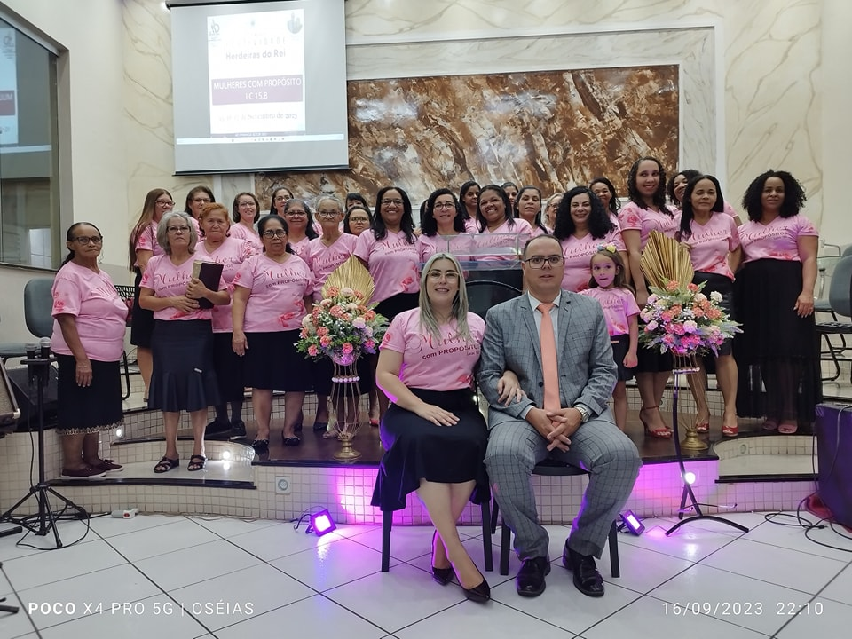

Conheça um pouco dos nossos departamentos:
Cordeirinhos de Cristo
É um grupo de crianças do bebê até os 12 anos, com tias capacitadas com o poder do espirito Santo para ensinar o seu filho a andar nos caminhos do Senhor.

Os ensinamentos são divertidos

Elas aprendem na salinha nos dias de Domingo de manhã na EBD quanto a noite na hora do culto, de Jesus de uma maneira divertida de mais facil entendimento da maneira certa.

Essas são as lideres das crianças
O grupo Geração Eleita
É o departamento que prepare os Adolesentes de 12 a 14 anos para entrarem nos jovens, com um ensino diferente das crianças ou seja um ensino mais profundo
Este departamento é muito importante pois prepara os adolecentes a igressarem na juventude, dandos a eles mais responsabilidade espiritual, quanto maturidade, eles ficam nos cultos normais igual aos jovens e aos irmãos para absorverem ja a palavra ministrada pelo pregador.
Herdeiras do rei
É o grupo das mulheres, o famoso circulo de oração, é um grupo cheio de Deus com louvores de adoração, mulheres que oram e jejuam, toda terça ensaio para apresentar um louvor ao Rei dos Reis
